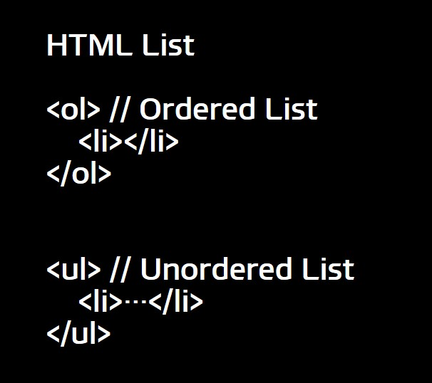

WEB Study
어떤걸 공부해볼래?
HTML Study
CSS Study
JavaScript Study
HTML 정리
단어 혹은 문장
을 strong 태그를 통헤 강조하는 방법이다.
단어 혹은 문장
을 u 태그를 통해 밑줄을 넣는 방법이다
단락을 표현할 때에는 p 태그를 사용하고, 줄 바꿈은 br 태그를 사용한다.
단, p 태그는 열고 닫음이 있는 태그이지만 br 태그는 열고 닫음이 없이 여는 태그밖에 없다.
HTML_Image
HTML_List

HTML_Table
HTML_Link
는 a를 사용한다.